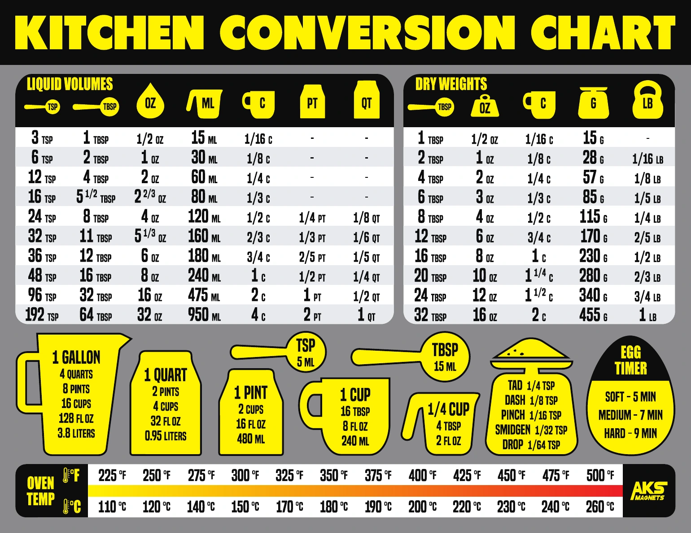

AKS MAGNETS · REFERENCE GUIDE
Kitchen Conversion Chart — Gray
The kitchen conversion magnet reference in a neutral gray design.
A practical magnetic reference chart designed to keep useful information close at hand.
View on AmazonOpens the product listing on Amazon.com.
More about this magnet
We're expanding this page with more product details, images, and helpful information. In the meantime, you can explore our related reference guide or browse the full magnet collection.